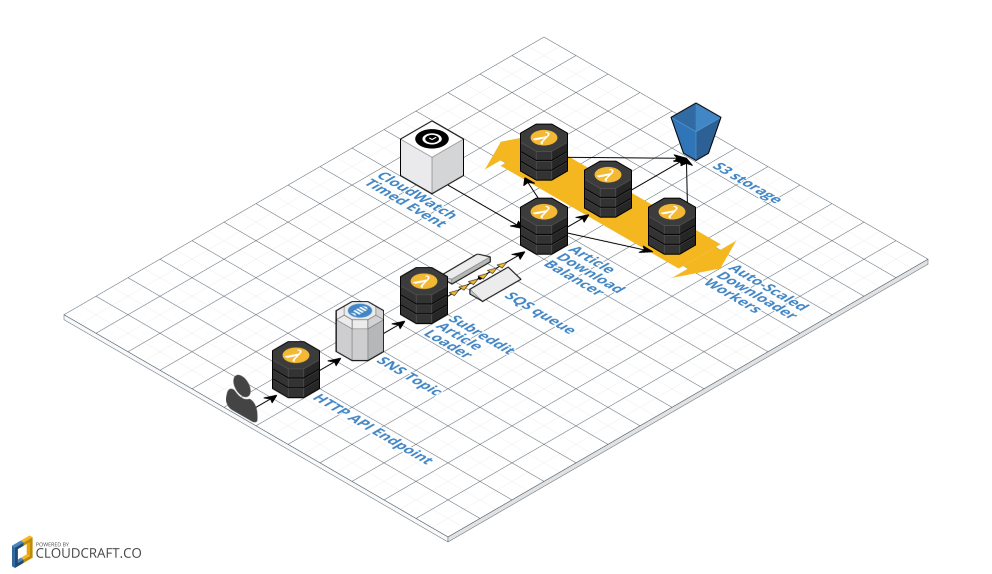

Serverless Reddit Crawling With Python And AWS Lambdas
Amazon recently announced Python 3.6 support for AWS Lambda, so this is a good time to explore what we can build with this. I decided to use a few different Lambdas to create a data pipeline that can be used for crawling top posts from a given Reddit subreddit, and store any linked images into S3 as a demonstration. Because how better to explore new tech than by downloading hundreds of cat pictures from Reddit? Even better if we can do this in an entirely serverless manner.
Pic here: 1. AWS Lambda 2. ??? 3. Profit + cat pictures
Lambdas are serverless, event-driven elements of the AWS platform, which means you do not have to worry about where to host the code, and how to scale it out. You can think of them as cloud-hosted functions that will be called by AWS infrastructure to respond to some event, e.g. an HTTP call, SNS notification, or a timed event.
This article will demonstrate how to use Lambdas to:
- Handle an HTTP request
- Process an SNS event
- Run on a schedule
- Chain Lambdas to process SQS messages
The completed pipeline will accept an HTTP request, triggering the crawl of the specified subreddit. This will load the top 100 posts from said subreddit (e.g. XXXXXXX), and then persist all pictures linked by each of the posts in S3.
The finished pipeline works as follows: 
- User POSTs a request to an HTTP endpoint requesting a certain subreddit to be crawled, e.g. /r/aww
- This request is handled by the first Lambda, titled 'HTTP API Endpoint' in the blueprint. The Lambda will create a new SNS notification, and return a '201 Created' to the user.
- The SNS event triggers the 'Subreddit Article Loader' Lambda, which will look up the top 100 posts in the given subreddit. It will then enqueue an SQS message for each post.
- A Scheduled Lambda ('Article Download Balancer') will periodically check for new work in the SQS queue. When new messages arrive, it will invoke Download Worker Lambdas, handing out one piece of work (i.e a reddit post to process) to ech worker.
- Each Worker Lambda will download the pictures linked by the reddit post they were invoked to process, and persist the files to S3.
Create the HTTP API Endpoint Lambda and the SNS topic
h3: what is SNS and why are we using it? - event driven, triggers lambdas - good for decoupling lambdas - lambdas can retry
api gatweay: - steps 1 and 2 from the api gateway guide http://docs.aws.amazon.com/apigateway/latest/developerguide/api-gateway-create-resource-and-methods.html or http://www.giantflyingsaucer.com/blog/?p=5730
lambda: - pip install boto3 <-- do we need to do this, or do the EC2s come with some libraries installed? - gets the url from the request - logs - adds to SNS - returns 201 Created
Deploy and test the Lambda
- create the SQS queue
- create a policy to write to sqs
- Deploy lambda using UI
- create API gateway
- Hit the lambda with curl (but mention Insomnia)
- Hit the lambda, get 201 back {"subreddit":"aww","sort_method":"top"}
- Show the logs
- Show the event in Sqs, mention this will consume the event
Create the Subreddit Article Loader Lambda
The article loader is throttled to 1 request every 2 seconds. It only loads up to first 100 items, and makes only 1 call to reddit api. Implementation could be changed to load more, but to avoid exceeding the rate each message in sqs should represent 1 reddit request.
http://docs.aws.amazon.com/lambda/latest/dg/lambda-python-how-to-create-deployment-package.html to install PRAW ? available modules: https://gist.github.com/gene1wood/4a052f39490fae00e0c3
- create SNS topic
- create policy to read from and delete from sqs and write to sns, and create a lambda role
- Link to getting a key for reddit dev access
- pip install praw
- Creating a Deployment Package
- get the link out of SNS event & log
- PRAW get top links, log, filter out anything that's not imgur or reddit images
-
send each link to sqs
-
Why SNS not SQS???
..last(ish): Create CloudFormation to deploy the whole stack